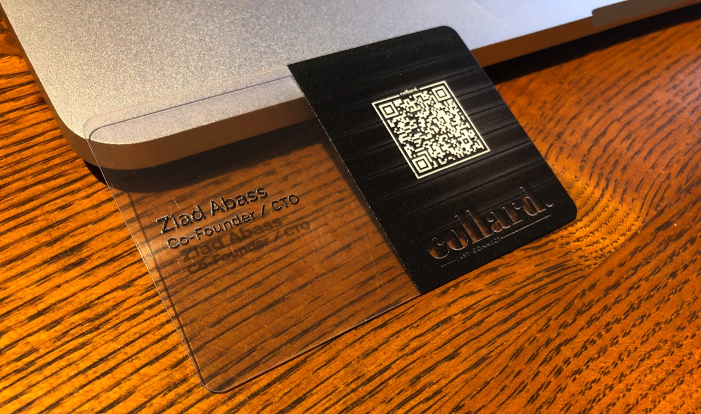
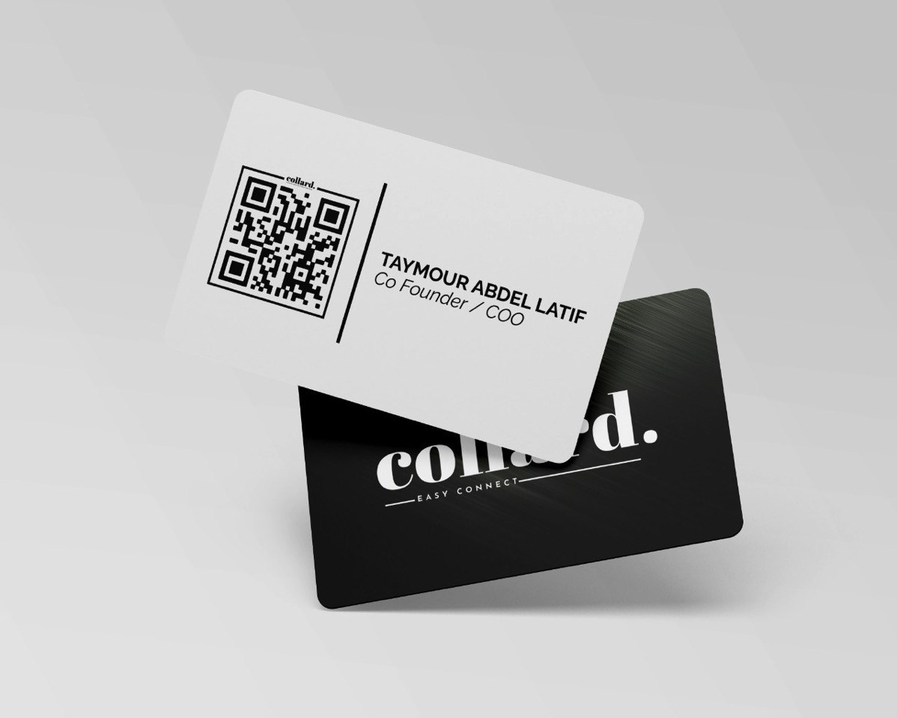
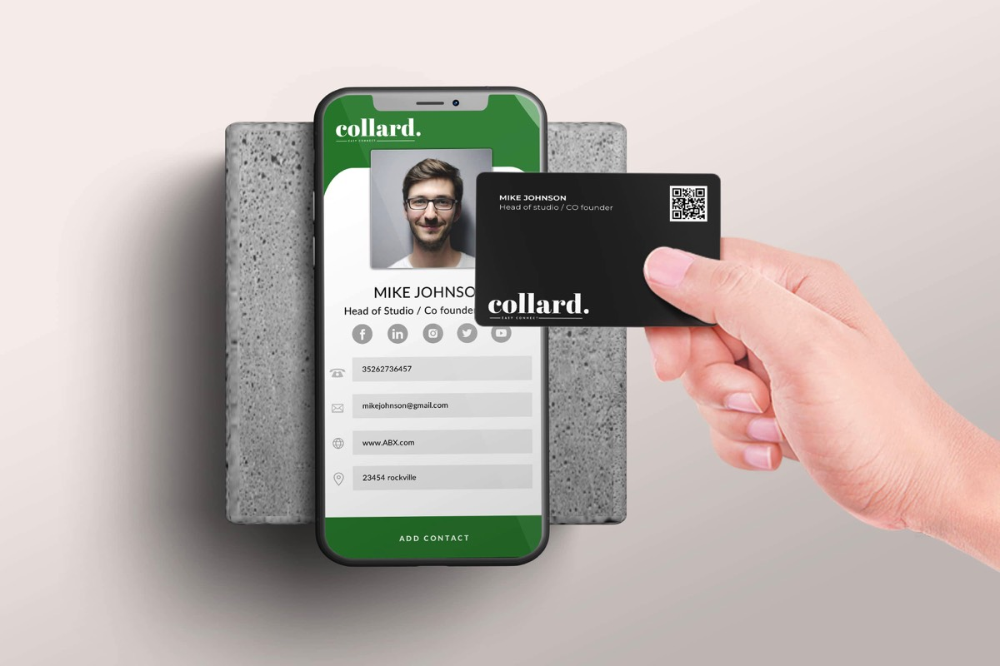

I co-founded a startup that is taking networking to a whole new level. Collard provides digital business cards which you can use to share your contact details and social media profiles with just a tap. Our cards have NFC chips embedded inside them which allow that, as well as a QR code for older non-compatible phones. Once you tap your card onto someone's smartphone, they can not only display your up-to-date information, but also save it all into a contact on their phone!

You can update your information through your account and your card will update in real-time - it doesn't get easier than that. Don't bother with printing and handing out paper cards that you know will get lost in a few hours, and don't worry about reading out your instagram @ to someone anymore.

The driving force behind the idea was the negative environmental impact that paper cards have, especially when one considers how many of them get thrown away within a few days after being handed out.
The cherry on top is that your Collard card will transform your (professional or informal) networking experience into a much more elegant one - and why miss out on a chance to show it off?
The cherry on top is that your Collard card will transform your (professional or informal) networking experience into a much more elegant one - and why miss out on a chance to show it off?

We allow full card customisation and ordering through our website, and we also create custom designs for companies based on their logos and colour schemes.
Links:
- Our website
- Instagram Page
- Linkedin Profile
- Youtube Channel
Links:
- Our website
- Instagram Page
- Linkedin Profile
- Youtube Channel